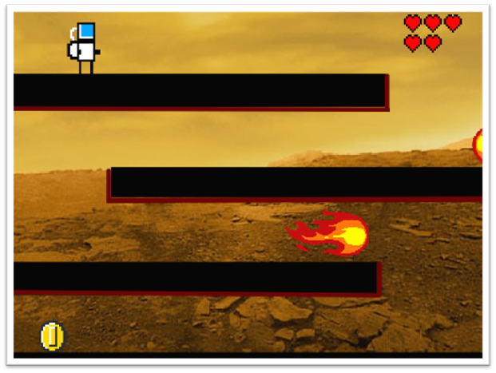
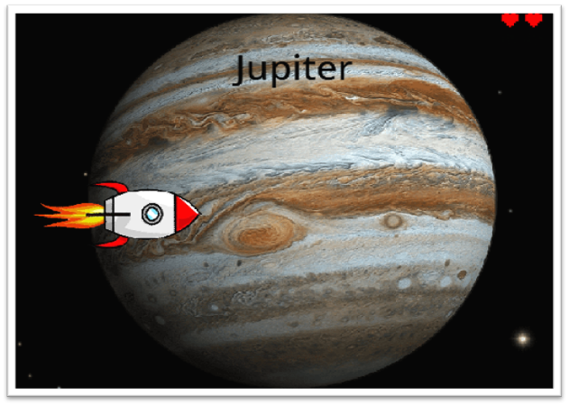

Es una pagina que creé junto con otros compañeros de mediatecnica con el fin de ser el complemento de la presentacion del juego Interestin planet´s.
El Proyecto fue realizado en el grado decimo y apezar de ser un poco viejo no es el unico, pero es uno de los mas grandes devido a que se le tuvo que dedicar bastante tiempo y imaginacion para realizarce.
Es un Juego que se realizo en una plata forma que no usaba lenguaje de programacion pero si logica de programacion y a la hora de hacer proyectos grandes puedes ser un poco complicado.
Su historia se basa en la vida de un astronauta que por una lluvia de asteroides pierde partes de su nave asi que es su camino por recuperarlas se encuentra con un amgo llamado Maturin que lo ayudará en su busqueda.
El proposito del juego es ensañarle a los niños mas sobre los planetas de manera divertida.
 